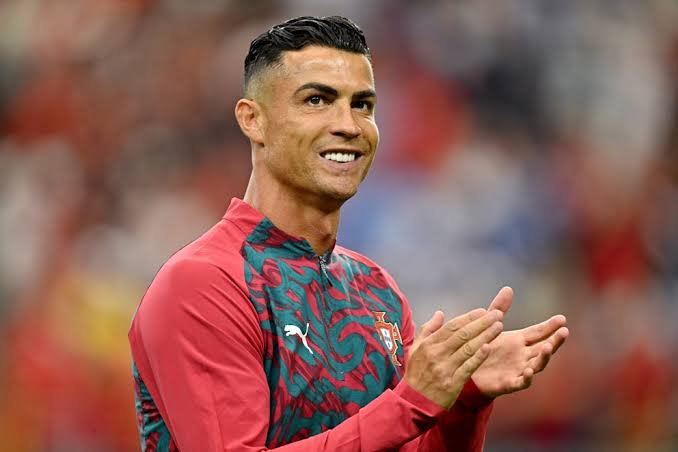

Cristiano Ronaldo dos Santos Aveiro, mer känd som bara Cristiano Ronaldo eller sitt
smeknamn CR7, född 5 februari 1985 i Funchal på Madeira, är en portugisisk
fotbollsspelare som spelar för saudiarabiska Al Nassr och Portugals landslag.
År 2008 utsågs han till både Europas och världens bästa fotbollsspelare och
tilldelades därmed båda utmärkelserna Ballon d'Or samt Fifa World Player of the Year
Award. Året före hade han belönats med Guldskon efter att ha gjort 42 mål på 49
matcher i Manchester United, där han vann tre Premier League-titlar (2007, 2008 och
2009) samt en Champions League-titel (2008). Ronaldo är sedan maj 2008 lagkapten i det
portugisiska landslaget. Han ledde laget till guld vid EM 2016. Ronaldo rankas ofta
som en av tidernas bästa fotbollsspelare.
När Ronaldo i juni 2009 lämnade Manchester United FC och skrev på för Real Madrid
blev övergångssumman den dittills högsta som någonsin betalats för en fotbollsspelare
80 miljoner pund (ca en miljard kronor). Ronaldo gjorde sin debut för klubben den 29
augusti mot Deportivo La Coruña.
I juli 2018 skrev Ronaldo på ett fyraårskontrakt med Juventus. Övergångssumman sägs
vara motsvarande drygt 1,1 miljard svenska kronor.
2021 lämnade Ronaldo Juventus och återvände till Manchester United. I slutet av
2022 lämnade han Manchester United och skrev på för saudiarabiska Al Nassr.